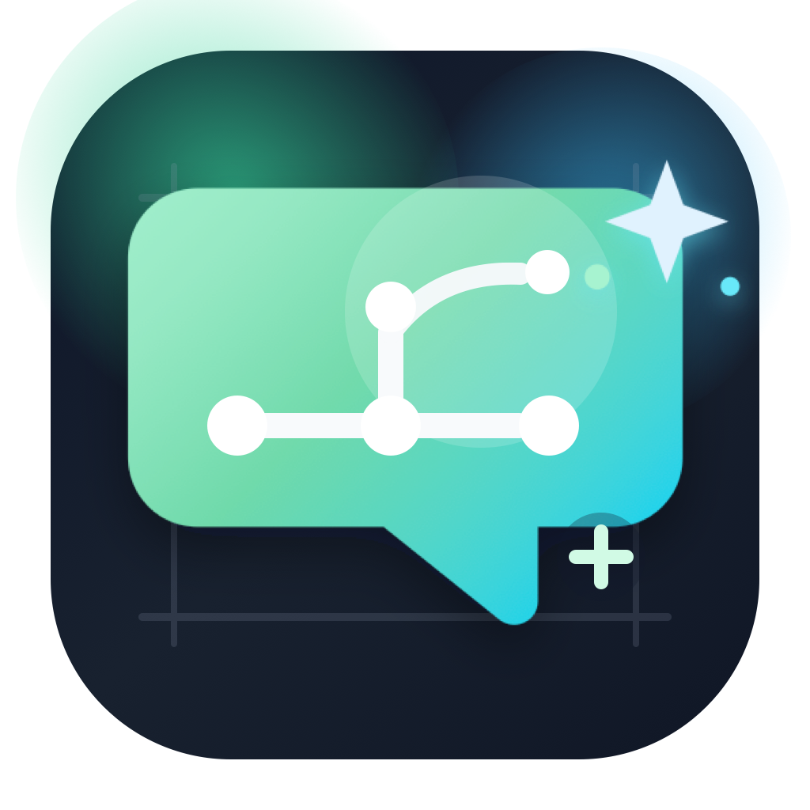

What it does
- Connects ChatGPT and Claude providers to Odoo.
- Lets users select providers and models safely.
- Supports AI conversations, summaries, KPIs, and follow-up workflows.
- Grounds important answers in deterministic Odoo calculations.

Odoo 19 Addon
A secure AI workspace that blends conversational assistance, deterministic ERP answers, controlled automation, and audit-ready governance for modern Odoo teams.
The assistant can answer real operational questions such as current month sales, delivered sales, top-selling products, delivery worklists, overdue workload, and record validation. It can also prepare reminders, activities, chatter notes, and approval requests from the same conversation flow.